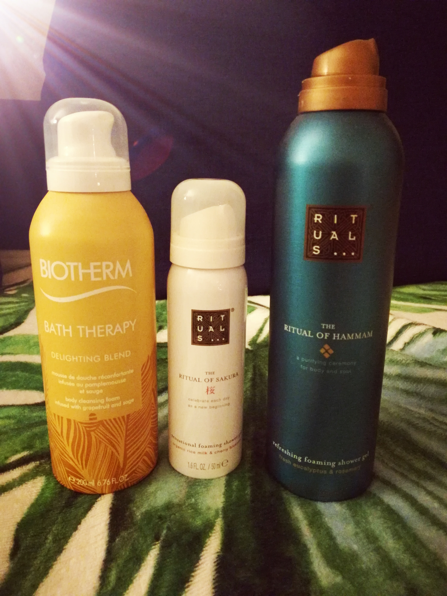
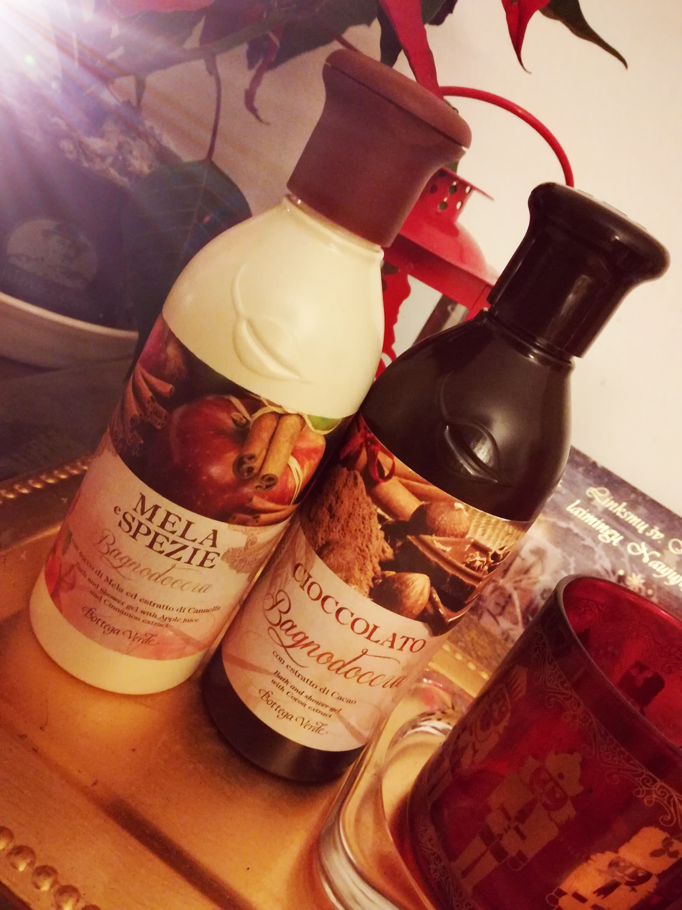
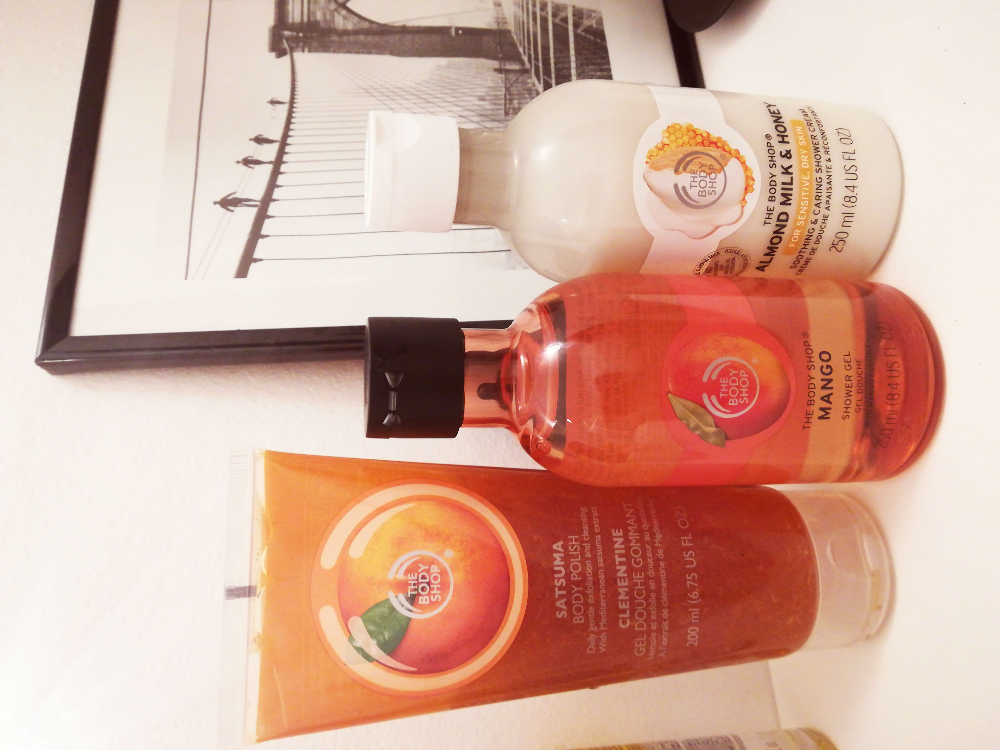

Apie mėgstamiausias dušo želes
Daug kas klausia apie kosmetiką, kokią naudoju ir kas patinka. Tad nutariau sukurti naują skiltį, kurioje dalinsiuosi savo kosmetiniais atradimais. Nesuprantu, kaip vonioje galima laikyti Palmolive, Dove ar Nivea dušo želes, kai yra tiek įvairių nuostabių kvapų kitų gamintojų įvairovė. Kiti pasakytų, jog jie taupo pinigus ir nepirks geresnių firmų dušo želių, arba nesureikšmina to. Aš jums įrodysiu, kad ir pigios dušo želės bus kur kas geresnės už tas visas palmolive ir dove...bei laimė slypi detalėse bei smulkmenose, man labai svarbu kokį kvapą jausiu besipliuškendama ir ką man jis primins. Taip, supratote, šį pirmą kartą pradėsiu nuo dušo želių. Noriu pasidalinti savo TOP 5 geriausių ir mėgstamiausių dušo želių. Be abejo dar yra, kurių ne esu išbandžius ir su laiku išbandysiu. Be to pabandžius vieną dušo želę, negaliu įvertinti, reikia pabandyti daugiau tos linijos kvapų, tad kai kuriomis dar anksti dalintis. 1. Taigi pirmą vietą užima Loccitane

Kodėl? Todėl, kad tai Loccitane, maloniausias apsipirkimas yra jų parduotuvėse visam pasaulyje. Stambule pavaišino arbata, pardavėjos labai kantrios, kai pati blaškausi ir kraunu viską ant prekystalio, nes noriu visko, prašau papasakoti apie nuolaidas, tad kuo daugiau perki tuo daugiau nuolaidų ir dovanų gauni. Įpakavimai nuostabūs, mėginukų visada įdeda. Kvapai primena keliones, vasarą ir romantiškus santykius. Taigi mano mėgstamiausias jų kvapas yra Verbena ir Bijūnų. Negaliu suskaičiuoti kiek kartų turėjau tuos pačius kvepalus, bei dušo želes, va nuotraukoje verbena jau į pabaigą eina. Aš atsimenu visus kartus, kai perku pas juos, pardavėjus, nes palieka labai malonius prisiminimus. Privalumai: kvapai, buteliukų dizainas, sudėtis. Trūkumai: specifinis buteliuko atidarymas, ne nusilauškite nagų, aš jau išmokau kaip atidaryti be vargo. Neputoja labai gausiai, man tai nėra trūkumas, bet kas mėgsta putų kalną, gali būti kiek nustebę. Ir atminkite kuo mažiau putoja, tuo produktas yra naudingesnis, tas pats ir su plaukų šampūnais. Nedaro bandymų su gyvūnais, parduodamų Europoje produktų, deja Azijos šalyse parduodami produktai yra bandomi su gyvūnais. Kaina apie 15 eurų. 2. Antra vieta Margarita
Oho kaip netikėta. Visada stebėdavausi, pamačius vonioje kas naudoja Margaritos dušo želes anksčiau. Ypač nesąmoningai atrodė alaus mielių ar šaltalankių, nu tokia nuobodybė. Tačiau, kai atsinaujino Margarita, pakeitė buteliukų dizainą, bei atsirado naujų kvapų, tapo vieni iš mėgstamiausių. Netikėtai Vilniaus senamiesčių apartamentuose vis rasdavau naujų Margaritos dušo želė ir pavergė mane. Privalumai: kvapas, mano mėgstamiausias vyšnių, tai lyg amareto vyšnia, jūs pabandykite pakvėpinti garantuoju, kad norėsite paragauti. Svarainių kvapas primena vaikystėje valgytus Bon Pari bonbonkes geltonos spalvos, norisi ne tik praustis bet ir valgyti tą kvapą. Tai Lietuviška kosmetika, man didelis privalumas, kad galiu palaikyti Lietuvos verslą (ne bet kokį o gerą). Labai patogūs buteliukai. Nedaro bandymų su gyvūnais. Trūkumai: Nesugalvoju, gal galėtų būti dar daugiau rūšių. Kaina apie 2 eurus. 3. Trečia vietą užimą spaudžiamos putos Rituals...
Paspaudi tiesiai ant kempinės ir turi putas. Tokias dažniausiai naudoju sporto klube, nes tiesiog patogiau ir greičiau. Rituals aplamai dievinu kosmetiką, dėl jaukių parduotuvių, aukšto lygio ir malonaus aptarnavimo, pavaišina dažnai arbata, neįkyrios pardavėjos, bei kuo daugiau perki visada gauni vertingą dovaną. Apie Rituals kalbėjau ne vieną kartą, kad tai Olandų firma, kad nedaro bandymų su gyvūnais. Tačiau Biotherm daro bandymus su gyvūnais, tačiau, gaunu nemažai kosmetikos dovanų, tad tikrai nesiruošiu išmesti, turiu sunaudoti. Privalumai: Ypač patogus naudojimas, kvapai prabangūs, bei primena prabangius viešbučius ir egzotiškus arabiškus hamamus. Trūkumai: buteliukai baigiasi pakankamai greitai. Kaina nuo 5 iki 10 eurų, priklauso nuo dydžio Papildomai pasidalinsiu turkišku hamam muilu.
Tokį naudoja nuo neatmenamų laikų hamamuose. Dievinu juos ir naudoju vietoj dušo želių, kai trūksta aštresnių pojūčių duše, kai išsiilgstu Stambulo mistiško apkabinimo. Tad puikiai pasitarnauja Rituals juodas muilas, bei molis. Ir visai nenusileidžia kokybe Avon produktas, tik ne visada jo būna. Privalumai: nuostabus kvapas, bet kas mažai patyręs ir matęs, gali būti per daug keistas. Trūkumai: kas nebuvęs tikram hamame ir nelabai domisi kūniška osmanų imperijos priežiūra, gali būti neįprastą jį naudoti, nes jį naudojant nereikia kempinės. Man trūkumų asmeniškai nėra. Kaina nuo 5- 10 eurų. 4. Ketvirta vieta Bottega Verde
Tai Italų kosmetika, deja jei nekeliaujate reguliariai į Italiją tad gauti bus sunkiau, galbūt galima internetu pirkti. Aš visada, kai būnu Italijoje apsilankau ne vieną kartą jų parduotuvėje ir užsiperku daug jų produkcijos. Taip pat visada gaunu dovanų iš draugės italės, nes ji pakvaišus dėl Bottega Verde kaip ir aš. Kvapai yra dolce vita. Saldaus gyvenimo kvapai, tuom viskas ir pasakyta, mažų mažiausiai galima kartais nualpti nuo kvapų, kurie primena Italiją, svaigius momentus, romantiką bei grožį. Parduotuvėse aptarnavimas labai malonus, jei dar pabandai pakalbėti itališkai, tai įvertina ir įdeda daugiau mėginukų ir pasiūlo asmeninių nuolaidų. Kartą Venecijoje išsikalbėjau su pardavėja, tai ji papildomai pridėjo didelę saują kojų kremo tardama- turbūt daug vaikštai, čia tavo pėdoms atgaivinti. Nedaromi bandymai su gyvūnais. Privalumai: labai originalūs kvapai, nuostabūs buteliukai. Tinka naudoti tiek kūnui tiek vonios putoms. Trūkumai: nėra. Tačiau gaila, kad tik Italijoje yra šis brendas, ir nuskambės banaliai ir tuščiai, bet aš vien dėl Bottega Verde galiu nuskristi į Italiją (na aišku ne viruso metu...). Kaina apie 7 eurus 5. Penkta vieta, visiems gerai žinomas The Body Shop
Kažkada buvo mano mylimiausia kosmetika, kai neturėjau pinigų, buvo didelė siekiamybė, dabar jau kiek atsibodusi, nes išbandyta yra absoliučiai viskas po dešimčia kartų. Tačiau, didelė įvairovė pozityvių kvapų. Nedaro bandymų su gyvūnais. Galima rasti visame pasaulyje, kas yra labai patogu. Privalumai: Pozityvus kvapai, gražios pakuotės. Trūkumai: nėra. Kaina nuo 4- 14 eurų Taip pat bandau ir matau, kad patinka LUSH, Ecooking (Danų brandas), bei Erbolario (Italų). Tačiau, kad padaryti apžvalgą norisi išbandyti kuo daugiau kvapų ir rūšių. Jei turit klausimų visada drąsiai klauskite, man malonu dalintis. Iki kitos apžvalgos!